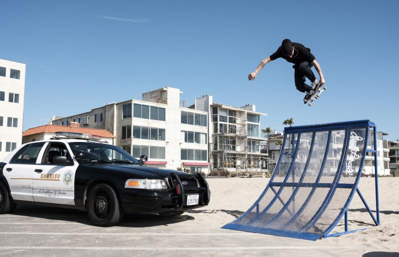
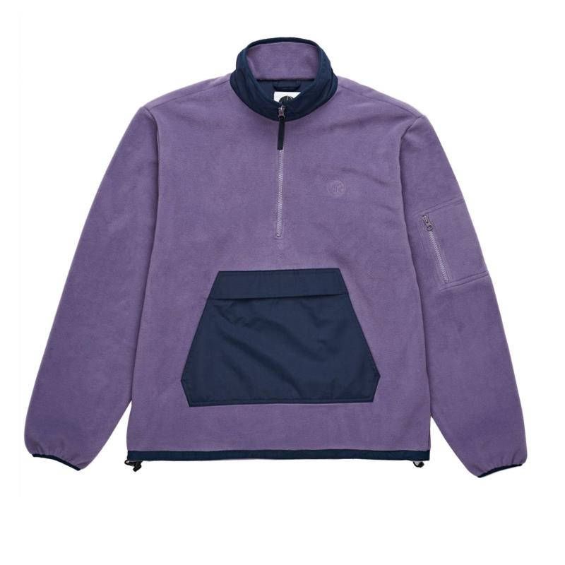
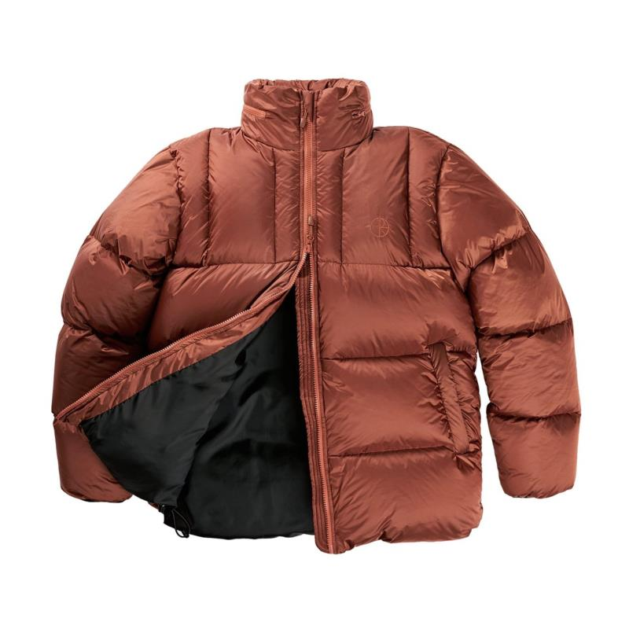

Like the flow of posts through social media, skateboard graphics are inherently ephemeral. They are destined to be worn and scuffed and distorted until all that remains is smeared paint and exposed wood. But some images are designed to linger, if only in the imagination. You could say veteran skateboarder Pontus Alv saw the writing on this wall when he drew one of the sport’s most resilient board graphics for his company Polar Skate Co. It features a Matisse-like woman performing a no comply, a trick that involves leaping off the ground with one foot while using the other to propel the board into the air. This image is almost a visual mission statement for the brand, but also indicates the extent to which skating has diversified aesthetically.
Founded in Malmö, Sweden in 2011, Polar represents a shift in skateboarding towards independent companies that serve a more niche audience. In interviews around the time of the brand’s launch, Alv earnestly described his disillusionment with the industry’s status quo, explaining that he wanted to create something that treated skateboarding with reverence and not just as a commodity.
 Founded in Malmö, Sweden in 2011, Polar represents a shift in skateboarding towards independent companies that serve a more niche audience. In interviews around the time of the brand’s launch, Alv earnestly described his disillusionment with the industry’s status quo, explaining that he wanted to create something that treated skateboarding with reverence and not just as a commodity.